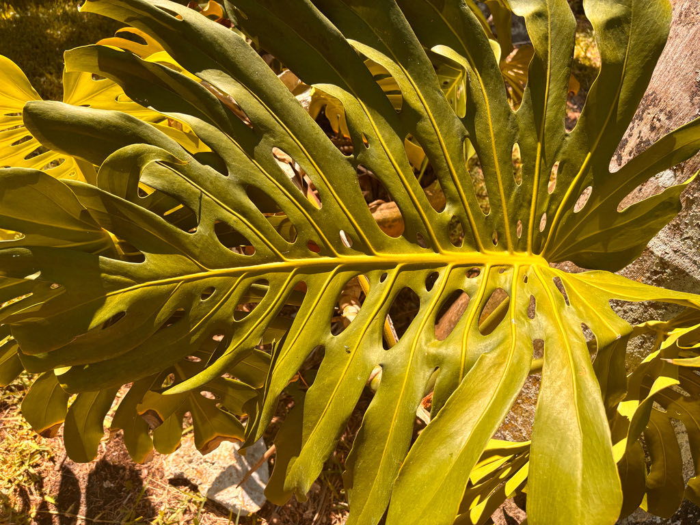

- Monstera seedlings don't grow toward the light — they grow toward darkness. This behavior, called skototropism, is a strategy for finding a tree trunk to climb: in a dense rainforest, the darkest patch on the horizon is almost always a massive host tree. Once the seedling contacts bark and begins to ascend, it switches to normal phototropism and chases the sun upward.
- The name is a two-part Latin joke: Monstera, from the word for 'monstrous,' refers to the plant's outsized leaves, while deliciosa — 'delicious' — refers to its edible fruit. Put them together and you have the delicious monster.
- Those famous holes are not damage — they are engineered by the plant itself through a genetically encoded process of programmed cell death, a strategy extraordinarily rare among flowering plants. No one is entirely certain why, though theories range from letting tropical downpours pass through without snapping stems to allowing patches of light to reach lower leaves.
- In the wild, the spadix generates its own heat during flowering — a phenomenon called thermogenesis — which helps volatilize the flower's scent compounds and draw in beetle pollinators at a distance.
Monstera deliciosa is native to the tropical rainforest understory from southern Mexico — particularly the states of Veracruz, Oaxaca, and Chiapas — south through Guatemala, Honduras, Costa Rica, and Panama.
In its home range it grows as a hemi-epiphytic liana, scrambling across the forest floor before finding a tree trunk to ascend, eventually climbing 60 feet or more into the canopy by means of aerial roots.
It entered Western cultivation early: UF/IFAS records its introduction to England in 1752, with the fruit formally introduced to the United States in 1874. From there it spread through tropical botanical gardens worldwide and settled comfortably into Florida's warm, humid climate as both a landscape and container plant.
Today it is one of the most recognized tropical foliage plants on the planet — far more people know it as a houseplant than have ever seen it climbing a rainforest tree.
- Young Monstera leaves emerge whole and heart-shaped, with no holes or slits at all. The distinctive fenestrations — the cuts along the leaf margin and the oblong perforations beside the midrib — develop only on mature leaves. The process is driven by programmed cell death, a form of genetically directed self-dismantling that is unusual among angiosperms.
- Why the plant invests in destroying part of each leaf remains debated: leading hypotheses include reducing wind resistance, allowing light to filter down to lower leaves, and potentially making intact-looking leaves less attractive to leaf-chewing insects.
- The plant produces two functionally different types of aerial roots from the same stem. Anchor roots grip the bark of the host tree and hold the vine in place as it climbs. Feeder roots grow downward toward the ground, eventually rooting in the soil below and providing a direct line for water and nutrients.
- In warm, humid Florida, both root types develop readily outdoors, and an unsupported vine will use its feeder roots to take hold in garden soil and spread laterally if not managed.
- The genus name Monstera appears in botanical literature as early as 1763, though its precise origin is disputed — it may derive from the Latin monstrum or from an earlier vernacular name. The species epithet deliciosa, meaning 'delicious,' is a straightforward reference to the edible fruit, which tastes of pineapple and banana when fully ripe.
- That fruit takes roughly a year to mature after flowering, and the spadix that bears it must ripen completely before eating — unripe fruit is a genuine irritant.
In its native Central American range, Monstera deliciosa is pollinated primarily by nitidulid beetles — small sap beetles drawn to the inflorescence by scent and by the warmth the spadix generates through thermogenesis. The flowering cycle spans about five days, beginning with a female phase followed by a male phase during which the spadix heats up and releases pollen.
This heat-assisted scent dispersal is the plant's main strategy for attracting its beetle pollinators.
In Florida cultivation, no co-evolved native insect community is waiting for this plant, and fruit set is uncommon without the right pollinators present. Where fruit does form, birds and small mammals may take it. The plant's calcium oxalate content makes the foliage unpalatable to most browsing animals, limiting its value as a browse plant.
Visitors interested in the park's best pollinator habitat will find it among the native plantings.
The inflorescence is a classic aroid structure: a creamy white spathe — a hooded, leaf-like bract 6 to 12 inches long — surrounds and partially encloses a yellowish-white spadix 4 to 6 inches tall. Flowers are bisexual and densely packed on the spadix, with female flowers opening first (protogyny), which reduces self-fertilization.
In the wild, nitidulid beetles are the primary pollinators, drawn in by scent and by heat the spadix produces during the male phase of flowering. The full flowering cycle takes about five days.
The fruit resembles a green ear of corn, 8 to 10 inches long, covered in hexagonal green scales. It takes roughly a year to mature after flowering. As it ripens, the scales begin to separate and lift, revealing the creamy edible flesh beneath and releasing a sweet, pungent aroma. Ripe fruit tastes of pineapple and banana. Unripe fruit is not edible and contains irritating calcium oxalate crystals.
Juvenile leaves are small, entire, and heart-shaped — no holes, no splits. As the plant matures, leaves grow dramatically larger (3 feet or more long and 2 to 3 feet wide on stiff 2- to 3-foot petioles) and develop the species' signature fenestrations: deep marginal cuts and elliptical to oblong perforations on either side of the midrib.
The number and size of holes increases with leaf age and overall plant maturity. Inadequate light suppresses fenestration development.
The cylindrical stem grows 2 to 4 inches in diameter and is covered with prominent leaf-base scars. Two kinds of aerial roots grow from stem nodes: anchor roots that grip bark or other supports, and feeder roots that grow downward to the soil. Both types elongate readily in Florida's humidity and are key to understanding how this vine moves through the landscape.
Monstera can be propagated by seed, stem cuttings, suckers, or tissue culture. Stem cuttings are the most common method; a cutting with at least one node and an aerial root will root readily in moist soil. Plants from cuttings may begin fruiting in 3 to 6 years; seedling plants take longer.
Start with the leaves — look for the contrast between any young, unperforated leaves low on the stem and the large, deeply fenestrated mature leaves higher up. Trace one of the large leaf petioles back to the stem and you will see the leaf-scar texture that marks where previous leaves attached.
Follow the stem down and look for the two root types: thicker anchor roots gripping whatever support is nearby, and finer, rope-like feeder roots angling toward the ground. If the plant is in fruit, the corn-cob-shaped green cylinder is unmistakable — press gently on the base scales; if they lift or separate easily and you catch a sweet smell, it is close to ripe.
All parts of the plant except the fully ripe fruit contain insoluble calcium oxalate crystals — needle-like structures that cause immediate burning pain, swelling of the mouth and throat, and irritation to the digestive tract if chewed or swallowed. The leaves and stems can also irritate skin on direct contact. Keep children and pets away from the foliage.
Dogs and cats are similarly affected: the crystals cause oral pain, drooling, and gastrointestinal irritation, though serious systemic toxicity is uncommon.
The ripe fruit is the one exception: once the hexagonal scales begin to lift and separate on their own, the flesh underneath is genuinely edible and tasty — a tropical flavor somewhere between pineapple and banana. Do not eat it early. Unripe fruit contains the same calcium oxalate load as the rest of the plant.
The name 'split-leaf philodendron' is one of this plant's most persistent and misleading common names — Monstera deliciosa is not a philodendron, though it belongs to the same family (Araceae) and the two genera share a similar look. UF/IFAS and the New York Botanical Garden both note the confusion explicitly; the name Philodendron pertusum, once applied to this plant, is no longer accepted.
UF/IFAS recommends giving this vine substantial clearance — at least 20 feet from trees, structures, and power poles — because aerial roots will grip and the stem will colonize whatever it reaches if not pruned back regularly. It is a genuinely large plant in Florida's climate, not a tame houseplant scaled up.


- © theblackd0g13 (CC-BY-NC), via iNaturalist